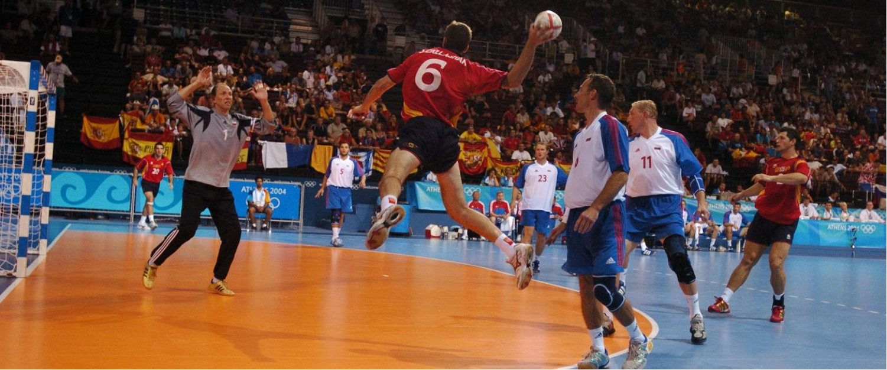
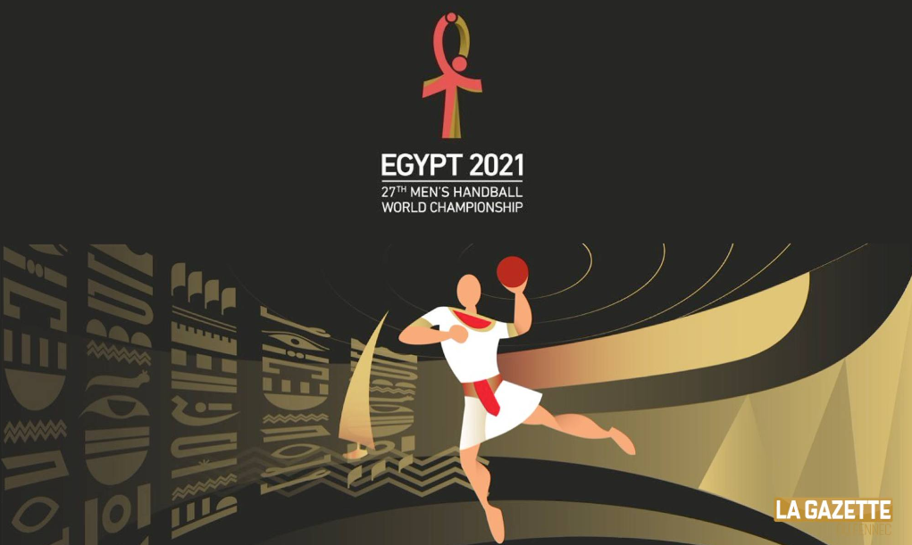

is a team sport in which two teams of seven players each (six outcourt players and a goalkeeper) pass a ball using their hands with the aim of throwing it into the goal of the other team. A standard match consists of two periods of 30 minutes, and the team that scores more goals wins.
Modern handball is played on a court of 40 by 20 metres (131 by 66 ft), with a goal in the middle of each end. The goals are surrounded by a 6-meter (20 ft) zone where only the defending goalkeeper is allowed; goals must be scored by throwing the ball from outside the zone or while "diving" into it. The sport is usually played indoors, but outdoor variants exist in the forms of field handball, Czech handball (which were more common in the past) and beach handball. The game is fast and high-scoring: professional teams now typically score between 20 and 35 goals each, though lower scores were not uncommon until a few decades ago. Players may score hat tricks. Body contact is permitted for the defenders trying to stop the attackers from approaching the goal. No protective equipment is mandated, but players may wear soft protective bands, pads and mouth guards.
The game was codified at the end of the 19th century in Denmark. The modern set of rules was published on 29 October 1917 in Berlin, which is seen as the date of birth of the sport, and had several revisions since. The first official handball match was played in the same year in Germany.[1] The first international games were played under these rules for men in 1925 and for women in 1930. Men's handball was first played at the 1936 Summer Olympics in Berlin as outdoors, and the next time at the 1972 Summer Olympics in Munich as indoors, and has been an Olympic sport since. Women's team handball was added at the 1976 Summer Olympics.
The International Handball Federation was formed in 1946 and, as of 2016, has 197 member federations. The sport is most popular in Europe, and European countries have won all medals but one in the men's world championships since 1938. In the women's world championships, only two non-European countries have won the title: South Korea and Brazil. The game also enjoys popularity in East Asia, North Africa and parts of South America.
After receiving the ball, players can pass, keep possession, or shoot the ball.
Players are not allowed to touch the ball with their feet, the goalkeeper is the only one allowed to use their feet but only within the goal area
If possessing the ball, players must dribble (not similar to a basketball dribble), or can take up to three steps for up to three seconds at a time without dribbling.
No attacking or defending players other than the defending goalkeeper are allowed to touch the floor of the goal area (within six metres of the goal). A shot or pass in the goal area is valid if completed before touching the floor. Goalkeepers are allowed outside the goal area, but are not allowed to cross the goal area boundary with the ball in their hands.
The ball may not be passed back to the goalkeeper when they are positioned in the goal area.
Nikola is a French handball player who plays for the Paris Saint-Germain handball club and the French national team. He has 2 Olympic golds to his name along with 4 World Cup golds and 3 European Championship golds. Nikola Karabatic was awarded the most valuable player award at the 2017 Men’s Handball Championship. With a record 3 times the IHF World Player of the Year to his name, Nikola is regarded as one of the greatest players in handball history.
Romanian, Cristina Georgiana Neagu, is considered by many to be the best in the world and the female handball player has won 3 times the IHF World Player of the Yearwhich is equal to her counterpart, Nikola Karabatic. Neagu has played 3 finals of the Champions League and has been named in the All-star team of the European Championship for 3 times.
Mikkel Hansen is another Paris Saint-Germain player who is one of the best in the world. The Danish international player has been named the IHF World Player of the Year 2 times in 2011 and 2015, respectively. He led the Denmark national handball team to a win in the 2016 Summer Olympics and was awarded the most valuable player award at competition held in Brazil.
Eduarda Idalina “Duda” Amorim Taleska is a Brazilian handball player who plays at the left back position both for her Hungarian club Gyori Audi ETO KC and the Brazilian national team. In the year 2014, she was voted as the World Handball Player of the Year by the International Handball Federation.